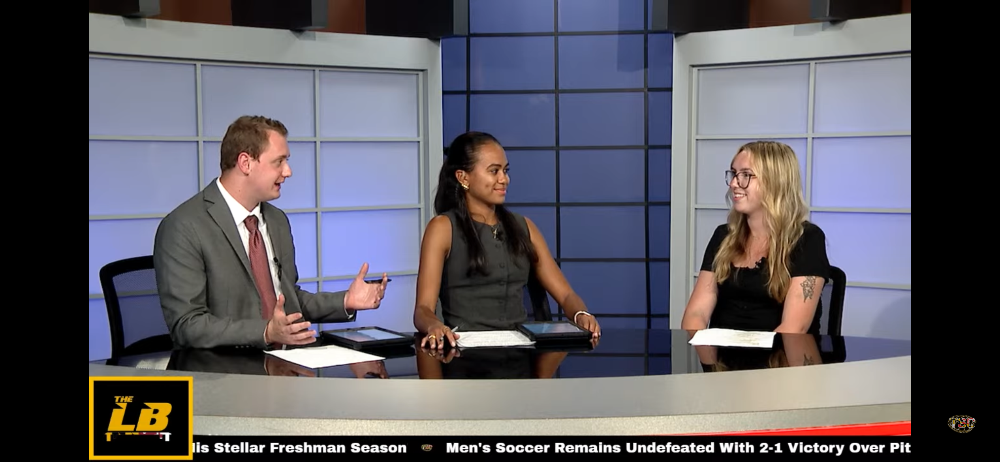

Resume

Writing Skills
- Investigated new courses at AACC and reported on them
- Reported on diversity events on AACC campus to raise awareness and promote them
- Included in the December 2022 print edition at AACC
- Created game previews for UMD mens soccer team and UMDs baseball team that required research of both teams and many statistical analyses
- Created game previews for UMD mens soccer team and UMDs baseball team that required research of both teams and many statistical analyses
- Attended UMD mens soccer games UMDs baseball team and reported on them through writing throughout the game
- Took notes during sports press conferences and applied them to my articles
Communication
- Spoke to UMD soccer and baseball athletic staff for information regarding the players (injury reports, game statistics, coach information)
- Reached out to other reporters regarding game information and statistics
- Assured customer satisfaction and diffused stressful situations with customers
- Conducted interviews with English and Spanish speaking students at AACC
- Selected by management to train new employees on operations & customer service
Time Management
- Published soccer and baseball game previews days in advance before the match
- Provided soccer and baseball game recaps minutes after the game had ended
- Presented quality customer service in a fast-paced environment (at least five tables per hour)
- Write and publish 2-4 articles per week along with taking 5 courses and working part-time
Education
University of Maryland, College Park, MD | Expected Graduation: December 2026 | Bachelor of Arts- Philip Merrill College of Journalism | GPA: 3.5
Anne Arundel Community College, Arnold, MD | Graduation: May 2024 | Associates of Arts, Communication and Media Studies | GPA: 3.6
Work Experience
Hostess, Server, Food Expeditor, Carryout Employee (August 2019-Present)| Seaside Restaurant and Crab House, Glen Burnie, MD.
Beat Writer (March 2026-Present) | Testudo Times, University of Maryland, College Park, MD.
Beat Writer(March 2026-December 2026) | Terrapin Sports Central, University of Maryland, College Park, MD.
Freelance Reporter (September 2022-December 2022) | Campus Current Newspaper, Anne Arundel Community College, Arnold, MD.